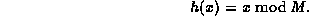

Data Structures and Algorithms
with Object-Oriented Design Patterns in C++
Data Structures and Algorithms
with Object-Oriented Design Patterns in C++Perhaps the simplest of all the methods of hashing an integer x is to divide x by M and then to use the remainder modulo M. This is called the division method of hashing . In this case, the hash function is

Generally, this approach is quite good for just about any value of M.
However, in certain situations some extra
care is needed in the selection of a suitable value for M.
For example, it is often convenient to make M an even number.
But this means that h(x) is even if x is even;
and h(x) is odd if x is odd.
If all possible keys are equiprobable,
then this is not a problem.
However if, say, even keys are more likely than odd keys,
the function  will not spread the hashed
values of those keys evenly.
will not spread the hashed
values of those keys evenly.
Similarly, it is often tempting to let M be a power of two.
E.g.,  for some integer k>1.
In this case,
the hash function
for some integer k>1.
In this case,
the hash function  simply extracts the bottom k
bits of the binary representation of x.
While this hash function is quite easy to compute,
it is not a desirable function because it does not depend
on all the bits in the binary representation of x.
simply extracts the bottom k
bits of the binary representation of x.
While this hash function is quite easy to compute,
it is not a desirable function because it does not depend
on all the bits in the binary representation of x.
For these reasons M is often chosen to be a prime number. For example, suppose there is a bias in the way the keys are created that makes it more likely for a key to be a multiple of some small constant, say two or three. Then making M a prime increases the likelihood that those keys are spread out evenly. Also, if M is a prime number, the division of x by that prime number depends on all the bits of x, not just the bottom k bits, for some small constant k.
The division method is extremely simple to implement. The following C++ code illustrates how to do it:
unsigned int const M = 1031; // a prime
unsigned int h (unsigned int x)
{ return x % M; }
In this case, M is a constant.
However, an advantage of the division method is that M
need not be a compile-time constant--its value can be determined at run time.
In any event,
the running time of this implementation is clearly a constant.
A potential disadvantage of the division method is due to the property that consecutive keys map to consecutive hash values:

While this ensures that consecutive keys do not collide, it does mean that consecutive array locations will be occupied. We will see that in certain implementations this can lead to degradation in performance. In the following sections we consider hashing methods that tend to scatter consecutive keys.
 Copyright © 1997 by Bruno R. Preiss, P.Eng. All rights reserved.
Copyright © 1997 by Bruno R. Preiss, P.Eng. All rights reserved.